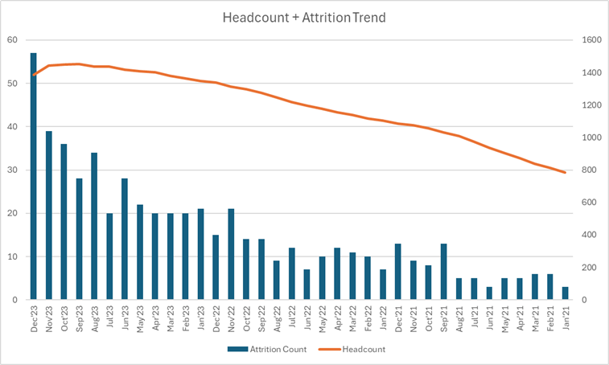
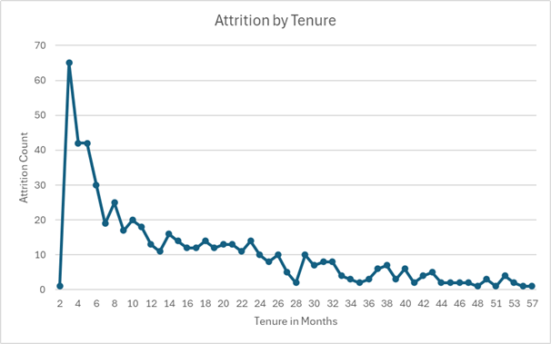
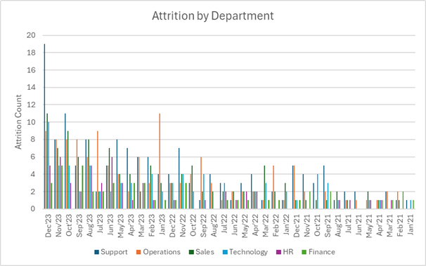
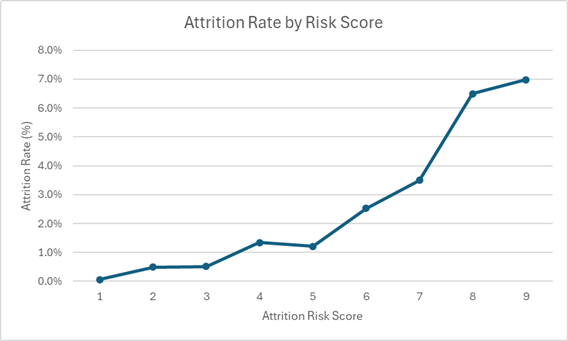

End-to-End Workforce Intelligence Project
This project analyzes rising attrition in the context of workforce growth, identifies key drivers of exits, and builds a practical rule-based attrition risk model to support proactive HR decision-making.
Attrition was increasing alongside workforce growth. The goal was to understand whether the issue was caused by scaling, onboarding gaps, workload pressure, or structural inefficiencies within specific functions.
A realistic synthetic HR dataset was built using Python, simulating:
A transparent rule-based attrition risk scoring model was created using four major business drivers:
This approach keeps the model easy to understand for business stakeholders while still creating a strong predictive signal.
The dashboard highlights key workforce trends including attrition concentration, tenure-based exits, departmental patterns, and the relationship between risk score and employee attrition.




This project demonstrates an end-to-end analytics workflow: data design, feature engineering, risk scoring, dashboarding, and business recommendation generation.
It project reflects how I approach analytics in the real world: combining data design, business logic, explainable modeling, and decision-focused storytelling.